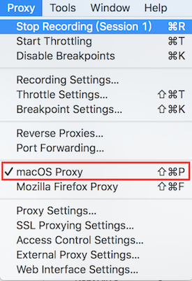
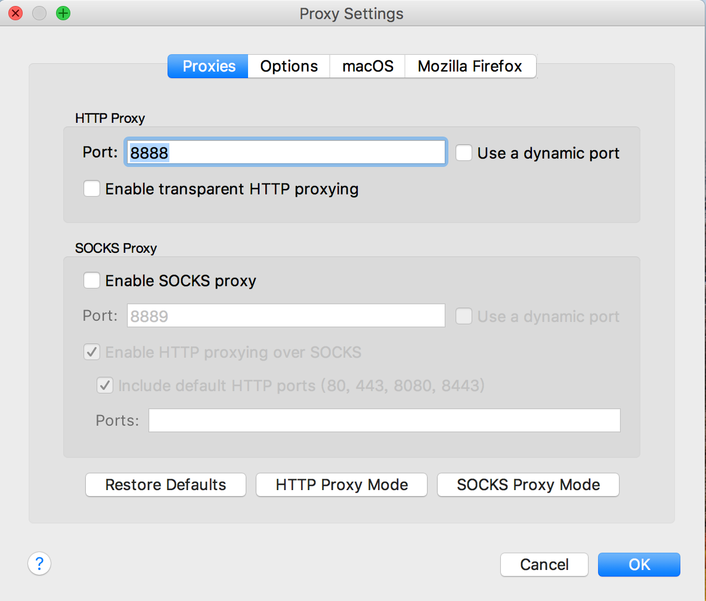
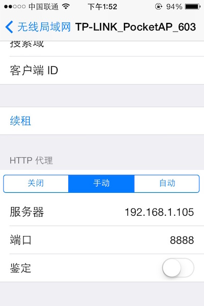
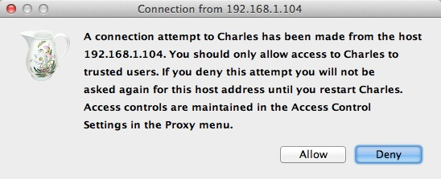
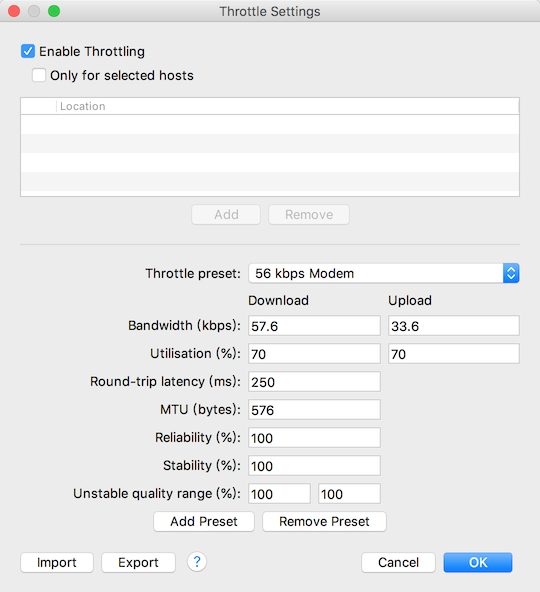
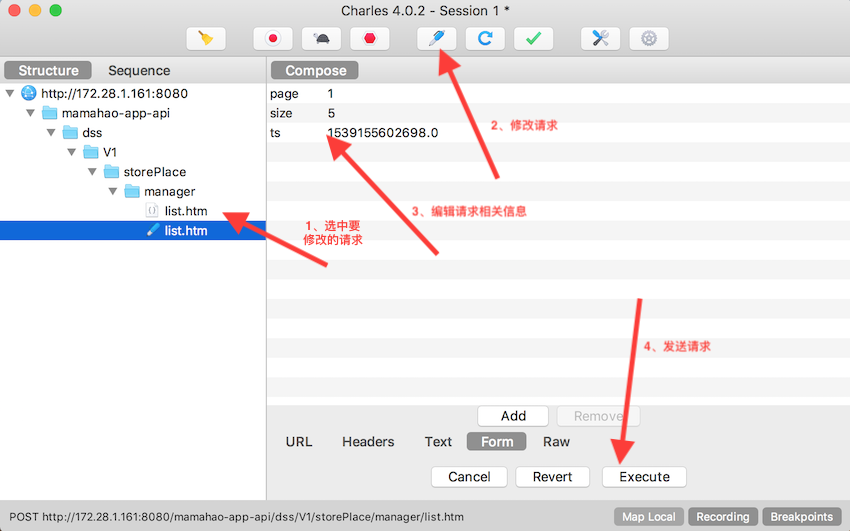
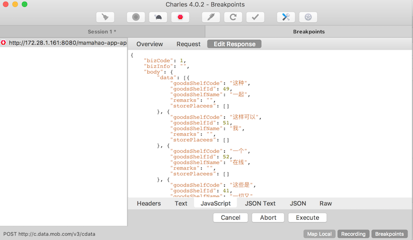
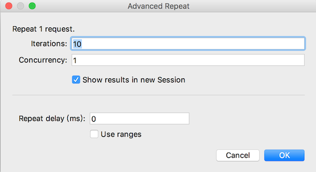
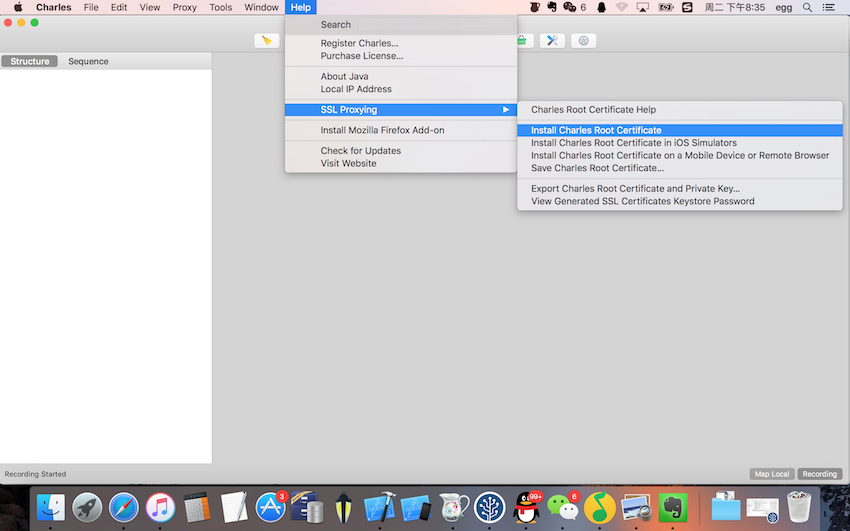

Charles相关使用
Charles 是在 Mac 下常用的截取网络封包的工具，在做 iOS 开发时，我们为了调试与服务器端的网络通讯协议，常常需要截取网络封包来分析。Charles 通过将自己设置成系统的网络访问代理服务器，使得所有的网络访问请求都通过它来完成，从而实现了网络封包的截取和分析。
目录
一、Charles
1.1、将 Charles 设置成系统代理
1.2、截取 iPhone 上的网络
1.3、模拟慢速网络
二、Charles修改网络请求
2.1、修改网络请求内容
2.2、拦截、修改请求
2.3、读取本地Json
2.4、给服务器做压力测试
三、使用Charles进行https抓包
3.1、安装根证书
一、Charles
1.1、将 Charles 设置成系统代理
Charles 是通过将自己设置成代理服务器来完成封包截取的，所以使用 Charles 的第一步是将其设置成系统的代理服务器。
启动 Charles 后，第一次 Charles 会请求你给它设置系统代理的权限。你可以输入登录密码授予 Charles 该权限。你也可以忽略该请求，然后在需要将 Charles 设置成系统代理时，选择菜单中的 “Proxy” -> “Mac OS X Proxy” 来将 Charles 设置成系统代理。如下所示：
之后，你就可以看到源源不断的网络请求出现在 Charles 的界面中。
1.2、截取 iPhone 上的网络
Charles 通常用来截取本地上的网络封包，但是当我们需要时，我们也可以用来截取其它设备上的网络请求。下面我就以 iPhone 为例，讲解如何进行相应操作。
Charles 上的设置
要截取 iPhone 上的网络请求，我们首先需要将 Charles 的代理功能打开。在 Charles 的菜单栏上选择 “Proxy”->”Proxy Settings”，填入代理端口 8888，并且勾上 “Enable transparent HTTP proxying” 就完成了在 Charles 上的设置。如下图所示:
iPhone 上的设置
首先我们需要获取 Charles 运行所在电脑的 IP 地址在"系统偏好设置"->"网络"中查看
在 iPhone 的 “设置”->“无线局域网 “中，可以看到当前连接的 wifi 名，通过点击右边的详情键，可以看到当前连接上的 wifi 的详细信息，包括 IP 地址，子网掩码等信息。在其最底部有 “HTTP 代理” 一项，我们将其切换成手动，然后填上 Charles 运行所在的电脑的 IP，以及端口号 8888，如下图所示：
设置好之后，我们打开 iPhone 上的任意需要网络通讯的程序，就可以看到 Charles 弹出 iPhone 请求连接的确认菜单（如下图所示），点击 “Allow” 即可完成设置。
1.3、模拟慢速网络
在 Charles 的菜单上，选择Proxy ->Throttle Setting->Enable Throttling
二、Charles修改网络请求
2.1、修改网络请求内容
我们可以修改该请求的任何信息，包括 URL 地址、参数等，之后点击 “Execute” 即可发送该修改后的网络请求（如下图所示）。Charles 支持我们多次修改和发送该请求，这对于我们和服务器端调试接口非常方便，如下图所示：
2.2、拦截、修改请求
右键选中要修改的网络请求->勾选Breakpoints
点击Execute之后，修改内容
2.3、读取本地Json
右键选中要修改的网络请求->勾选Map Local

点击OK之后，修改内容
2.4、给服务器做压力测试
右键选中要修改的网络请求->勾选Repeat Advanced

接着我们就可以在弹出的对话框中，选择打压的并发线程数以及打压次数，确定之后，即可开始压测。
三、使用Charles进行https抓包
3.1、安装根证书
a、安装根证书
